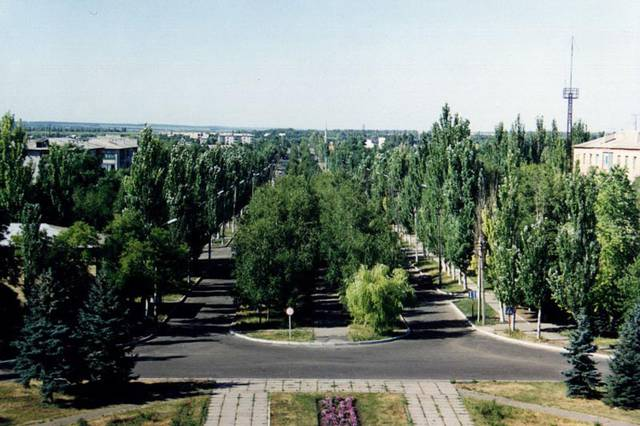

Новоазовск
История города

1849
год
Станица Новониколаевская основана в 1849 году на территории Области Войска Донского.
1859
год
К 1859 году в станице было 128 дворов, 885 жителей. Месторасположение на пересечении морских и сухопутных путей способствовало тому, что в 1870—1880-х годах станица стала местом оживлённой торговли пшеницей, скотом, рыбой, солью. Была построена пристань с магазинами и складскими помещениями.
1914
год
В Новониколаевской в 701 дворе проживало около 7 900 человек. Работали три кирпичных завода, почтово-телеграфная контора, ссудо-сберегательное товарищество, два начальных училища. Каждый год проводились две ярмарки.
1918
год
В станице была впервые установлена Советская власть, в дальнейшем селение оказалось в зоне боевых действий гражданской войны.
Май 1918
год
Станица попала в приграничную с Украиной австро-немецкую оккупационную зону.
1919
год
Освобождена в начале года.
Март 1920
год
Станица вместе с западной частью ликвидируемой Области войска Донского была передана из состава России в Украинскую ССР, где вошла в Донецкую губернию.
1923
год
Переименована в станицу Будённовскую.
1929
год
Здесь были созданы два колхоза, которые к 1931 году объединили 80 % дворов. Образовались рыболовецкая артель и совхоз.
1938
год
Посёлок городского типа Будённовский. Накануне Великой Отечественной войны в станице работали местная электростанция, больница, две общеобразовательные школы, районная библиотека, дом культуры.
1951
год
Здесь действовали совхоз и несколько мелких предприятий местной промышленности.
1959
год
посёлок был переименован в Новоазовский.
1966
год
город районного подчинения Новоазовск.
1973
год
Население составляло 13 тыс. человек, здесь действовали кирпичный завод, птицекомбинат, а также музей боевой и трудовой славы.
1982
год
Здесь действовали племенной овцезавод, комбикормовый завод, молочный завод, хлебный завод, два асфальтобетонных завода, кирпичный завод, птицефабрика, пищевкусовая фабрика, межколхозная строительная организация, райсельхозтехника, райсельхозхимия, комбинат бытового обслуживания, ПТУ, 4 общеобразовательные школы, музыкальная школа, больница, Дом культуры, 4 клуба, 10 библиотек.
1989
год
Численность населения составляла 12 988 человек, основой экономики являлась пищевая промышленность.